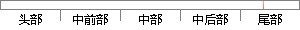

当系统运行节拍超过100后，创建一个优先级为1的任务：
片段位置图

相似结果
相似片段：在系统中当一个优先级高的任务需要等待一个优先级...优先级也可以是动态的,它们能在系统运行时被用户...这个定时中断叫做时钟节拍,它应该每秒发生10至100次...
| 标题 | 《嵌入式RTOS实时性的改进方法及在微型热敏打印机中的应用》 |
| 对比库 | 中国学位论文全文数据库 |
| 作者 | 刘兰生 |
| 机构 | 北京工业大学 |
| 分类 | 检测技术与自动化装置 |
| 年份 | 2004 |
| 相似率 | 80% （严重抄袭） |
※ 片段修改建议 ※
近似词参考：- 超过：跨越 凌驾
- 创建：建立 创立
- 节拍：节奏
- 任务：使命 义务
- 系统：体系
系统自动生成语句：当体系运行节奏跨越100后，建立一个优先级为1的使命：
注：本片段修改建议为系统自动生成，仅供参考。